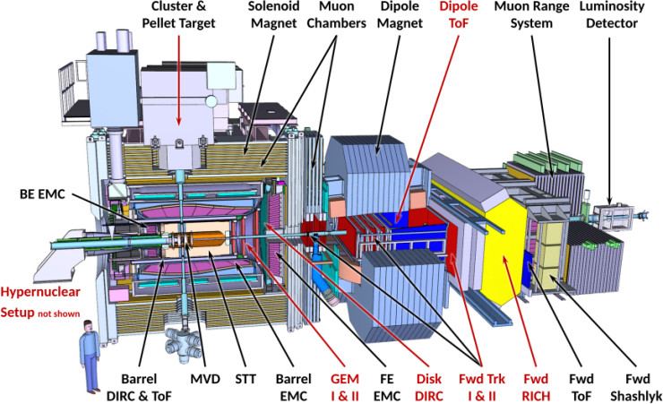
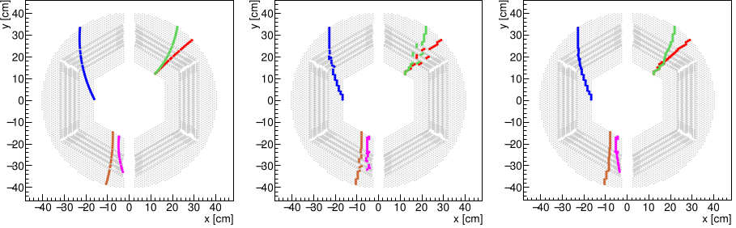

This page provides an overview of the Particle Physics project I worked on.
Particle collisions and big whoops

What PANDA looks like. It's an experiment that will explore some nuclear-physics scientific themes based on proton - anti-proton collisions. This picture has been taken from this website .
Let's start first with: What is PANDA?
Hearken, noble audience, for I shall regale you with a saga of the PANDA experiment, a grand venture that ventures into the depths of hadron physics. PANDA, an acronym for Proton ANtiProton Annihilation at Darmstadt, embarks upon a quest to uncover the enigmatic nature of the nuclear physics world (the very very very small world).
Within the PANDA experiment, proton and antiproton unite, colliding with great force. This collision gives birth to a myriad of particles, akin to a celestial dance of creation and destruction. Through careful observation and analysis, PANDA seeks to unravel the mysteries concealed within the fundamental building blocks of matter.
But lo, the PANDA experiment is not limited to a singular domain of inquiry. It encompasses a vast array of projects, each with its own unique aim. For example, it will (i) delve into the mysteries of strong interactions, exploring the strong nuclear force that binds protons and neutrons within atomic nuclei, (ii) illuminate the nature of exotic hadrons, such as tetraquarks and pentaquarks, as those peculiar entities that defy conventional classification and (iii) embark on a quest to comprehend the strange phenomenon of confinement, wherein quarks and gluons are bound within protons and neutrons.
With its sophisticated particle detectors, PANDA aims to paint a comprehensive portrait of the subatomic world, bridging the realms of theory and experiment. Its findings have far-reaching implications, enhancing our understanding of the fundamental forces that govern the cosmos, casting light upon the intricate tapestry of the universe.
May 2023: Reconstructing charged-particles trajectories in PANDA

All grey points represent the underlying detectors (tubes actually), and the different colored points correspond to the 5 different particle trajectories. Left to Right: we have the real trajectories projected on a 2D plane, the simulated detections based on the detector layout, and the final reconstruction with LOTF. Not too bad if you'd ask me.
Mmm... Track reconstruction, huh? This paper is all about that fancy stuff in the PANDA experiment. We're fixated on the Straw Tube Tracker (STT), an important gizmo for figuring out tracks, events, and particle properties in PANDA. But here's the thing, PANDA is gonna have a crazy amount of data flying in every second. So, this track reconstruction thingy needs to be super quick, you know, on-the-fly, to decide which events are worth keepin'. Gotta find that sweet spot between efficiency and computational time.
To tackle this challenge, we bring in the LOcal Track Finder (LOTF) algorithm (lotf means kindness in Persian, so be kind or be king. wait no). It's all about simplicity. Just using the shape of the detector, LOTF piece together trajectories. Combining different techniques to get the best track reconstruction, while keepin' the computational time in check. The quicker, the better.
LOTF seems like a sweet tool for track reconstruction, especially when it comes to those tricky overlapping tracks which are hard hard hard to reconstruct. It can grab those particle trajectories with little error, which is super important for gettin' accurate particle properties. But hey, we also know there's more work to be done to take on all the challenges that PANDA is throwing in our way, so we still have much to do to get there. And fortunately, we have some time because PANDA isn't built yet.
The Word Cloud summarizing the paper most-used words.
{kind=link}